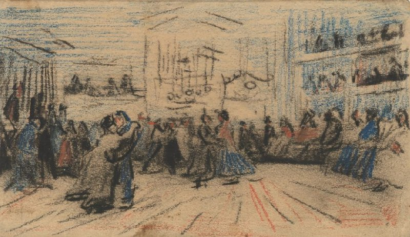

The Dance Hall
The Dance Hall in Arles made in December 1885, is an early work by Vincent van Gogh made with chalk on paper, painted while he was in Antwerp, Belgium. Unlike his later, more vibrant pieces, this painting features a darker, earth-toned palette, The scene captures a dimly lit dance hall with figures engaged in movement.
Back to Paintings